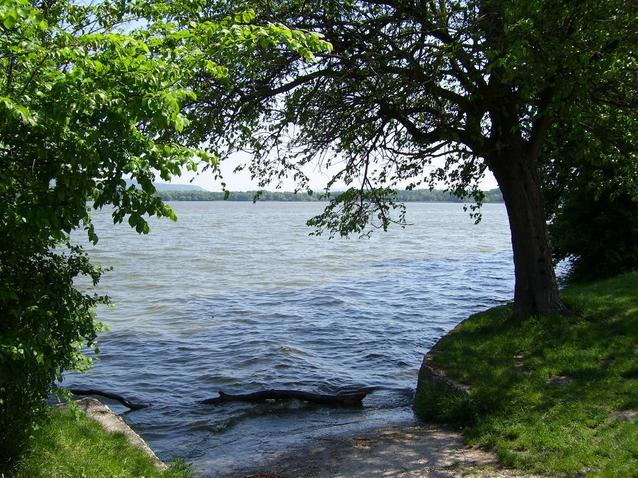

Walker, MN- Small Town- Big Vacation
Photo Credit: Claudia Meyer (https://www.freeimages.com/photo/sunset-1363259)
Quick Facts:
- Located in North Central Minnesota (about 3 hours form the Twin Cities)
- Population of less than 2000 people (2010 census- 941)
- Walker Bay is one of the deepest bays on the enormous Leech Lake
- Home of Moondance Jam
Recreation:
- Fish on Walker Bay (known for walleye fishing)
- Swim at the beach and let the kids play on the new playground equipment
- Golf at some of the most beautiful golf courses
- Bike and hike on over 150 miles of trails
- State/National forest for all the nature lovers
- Museums, History, and Art
- Shopping galore
Entertainment:
- Northern Lights Casino & Hotel
- Walker Bay Theater-Home of Minnesota Folklore Theater
- Walker Bay Live (summer event series)
- Moondance Events (and Moondance Jam!)
- Lots of local bars and restaurants